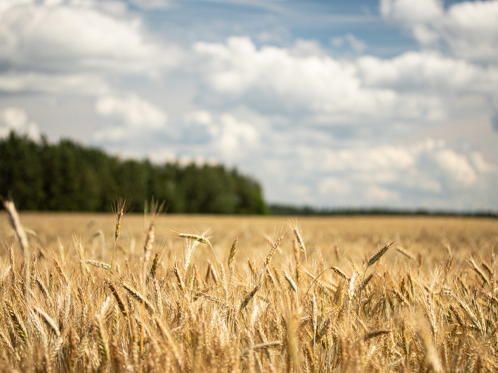
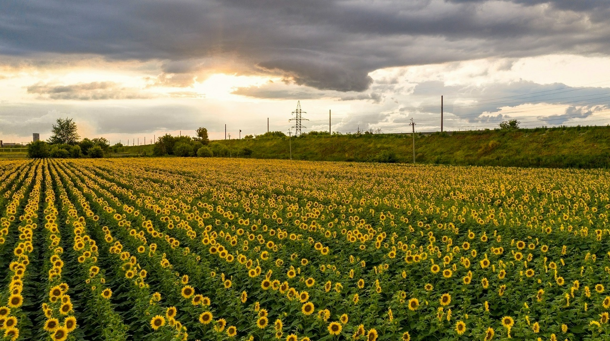

Основание предприятия
Сформировали базовое производственное направление, выстроили первые рабочие процессы и начали сотрудничество с партнерами в регионе.



Обработка грунта, удобрение почвы, анализ состава.
Современная посевная техника, сертифицированные семена.
Удобрения, защита от вредителей и сорняков.
Собственный уборочный комплекс, контроль влажности.
Крупные хранилища, прямые поставки продукции без посредников.
Сформировали базовое производственное направление, выстроили первые рабочие процессы и начали сотрудничество с партнерами в регионе.
Увеличили ассортимент культур и сделали планирование сезонных объемов более устойчивым за счет более точной структуры посевов.
Сфокусировались на доработке процессов хранения, контроле состояния партии и более организованной координации отгрузок.
Закрепили сотрудничество с постоянными покупателями и расширили географию поставок, постепенно выходя за пределы локального рынка.
Объединили производственные и коммерческие процессы в более цельную модель, чтобы сделать сервис и поставки для партнеров более предсказуемыми.
Продолжаем усиливать качество взаимодействия с клиентами, управляемость поставок и внутреннюю операционную дисциплину без потери гибкости в работе.